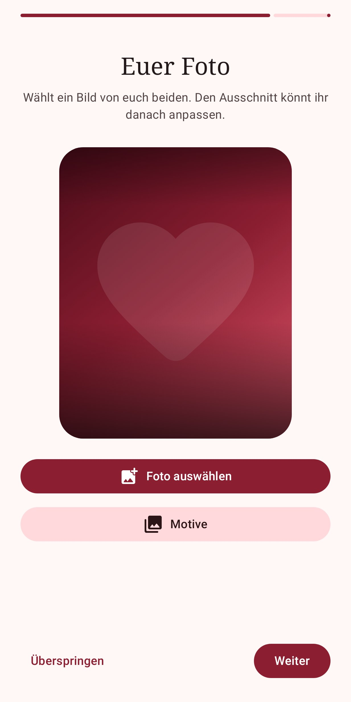

Eure gemeinsame Zeit
Tage, Wochen, Monate und Stunden auf einen Blick, dazu ein sekundengenauer Live-Zähler.
Since Us zeigt, wie lange ihr schon zusammen seid, mit eurem Lieblingsfoto, und erinnert euch an jeden Jahrestag und besonderen Tag.
F-Droid und Google Play folgen bald



Alles, was ihr braucht, und nichts, was nervt.
Tage, Wochen, Monate und Stunden auf einen Blick, dazu ein sekundengenauer Live-Zähler.
Erinnerungen an Monatstage, Jahrestage, alle 100 Tage und Schnapszahlen wie 222.
Wählt ein Bild von euch beiden und passt den Ausschnitt mit einem Finger an.
Euer Foto mit euren Tagen oder ein kompakter Zähler in den Farben eures Handys.
Hell- und Dunkelmodus, die App folgt der Sprache eures Handys.
Für immer kostenlos unter der GPL-3.0. Jeder kann den Code lesen und prüfen.
Das Foto-Widget zeigt euer Bild und eure gemeinsamen Tage, mit genau dem Ausschnitt aus der App. Die Größe lässt sich an den Platz neben euren anderen Widgets anpassen.
Kein Konto, keine Cloud, keine Werbung. Namen, Datum und Foto verlassen euer Handy nie.
Wählt, woher ihr eure Updates bekommen wollt.
APK herunterladen. Die App meldet sich, wenn ein Update bereitsteht.
HerunterladenDer Open-Source-App-Store, direkt aus dem Quellcode gebaut.
Automatische Updates über den Play Store.